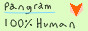

Just Fucking Use IPv6
Lovingly inspired by https://justfuckingusehtml.com, https://justfuckingusereact.com, and https://justfuckingusetailwind.com
Here’s what the path from your users to your service probably looks like:
| # of translations | IP | Description |
|---|---|---|
| 0 | 192.168.0.67 | RFC 1918 IP, client’s router |
| 1 | 100.69.4.13 | CGNAT IP, ISP hackery |
| 2 | 203.0.113.27 | the first real IP |
| 2 | | BGP magic |
| 2 | 198.51.100.0 | your edge |
| 3 | 10.11.11.11 | your box, behind NAT |
| 4 | 172.16.4.20 | probably some bullshit Docker container |
Four layers of translation, for something that was designed to be an end‐to‐end connection between peers on the global internetwork. What the fuck? And good luck if anything inside your edge uses the same private ranges for different things, or if you’re a large enough company that 10.0.0.0/8 is getting tight (Microsoft has been struggling with both of these things, which is one of the reasons they’re moving to IPv6 internally).
There are a few problems caused by IPv4’s lack of addresses, but I’m leading with NAT as the enemy because it’s the clearest example of nonsensical workarounds to running out of fucking numbers.
IPv4 has 3.7 billion addresses dedicated to global unicast, a hell of a lot less than the number of networked devices in the world. This has led to both NAT, and a scarcity of fucking numbers; an IPv4 /24 costs about $5,000–$10,000 (except…), meanwhile RIRs are still handing out gobs of IPv6 for no charge on top of your annual service fee.
What do you do? The correct answer is to use bigger numbers!
IPv6
Why it’s great
NAT is gone, every device gets a real address. traceroute tells the truth, and IPs are one‐to‐one actual clients.
It has a modern packet structure. There’s a fixed 40 byte header, there’s no router‐side fragmentation, there’s no checksum because five hundred other fucking layers already do that.
There’s plenty of room for design. Every site gets a /48, a /48 contains 65,536 /64 subnets, and a /64 can contain practically infinite hosts. Stick to that, sparsely allocate, and:
- you will never ever need to renumber
- absolutely no VLSM soup (and you were about to tell me IPv6 addresses are hard to remember!)
Neighbor Discovery replaces ARP, and your switches stop spamming everyone to find one guy.
And it’s fucking cheap!!
“But nobody uses it!”
APNIC estimates global end user capability is around 43%, and 50% of Google clients are on IPv6.
Basically every mobile network is IPv6‐only to the handset, with NAT64 and 464XLAT carrying your laggard service.
“But NAT is my firewall!”
NAT only drops unsolicited inbound packets because it doesn’t know where to take them. Set up an actual IPv6 firewall, or better yet, have actual host‐level security on every device.
“But the addresses are too long to remember!”
- DNS exists for a reason. Hell, we’ve had the hosts file for as long as we’ve had IP.
- You can compress zeros, and you can pick your own hex. My most important box is [
2620:c5:d000::1].
“I don’t understand it!”
It’s IP. Same TCP, same UDP, same TLS. DNS records are exactly the same except that they’re called AAAA records instead of A records.
If you work with computers, you understand hex, you can read the addresses.
Also — the protocol was published in the ’90s. You have learned and forgotten ten programming languages since then. But 128 bits instead of 32 is too much? Sure.
“But my ISP doesn’t support it!”
That may very well be true at home, and if so, that’s something to consider on your next renewal. Very likely false at work: almost every major CDN, transit provider and colo has had IPv6 for years and charges much less for it. Give them a call before blaming them.
“But half of our users are IPv4‐only!”
Yes. That’s why you keep one dual‐stack edge. Cloudflare, Fastly, Akamai, Amazon CloudFront, and most CDNs can present an IPv4 face to your IPv6‐only backend, and can do so with only a few IPv4 addresses to your ~unlimited IPv6 backend logic.
“Wait, did you just imply that we should go IPv6‐only?? But we have IPv4‐only cloud dependencies!”
Don’t worry, this side is solved too. NAT64 and 464XLAT make IPv4 services transparently accessible from an IPv6 network. Again, this is how mobile data has worked for years.